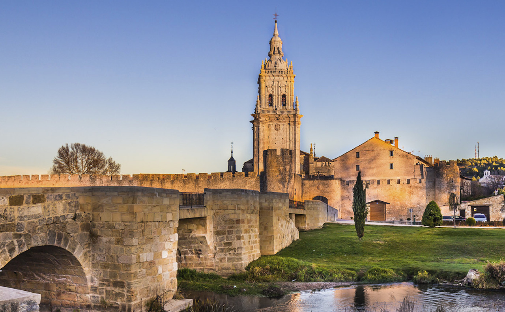

El Burgo de Osma, localidad situada en la provincia de Soria, España, tiene una historia rica y variada. Desde sus orígenes en la época romana, donde su estratégica ubicación cerca de importantes vías de comunicación sugiere una presencia relevante, hasta su destacado papel durante la Edad Media como centro religioso y estratégico tras la fundación de la diócesis de Osma en el siglo XII. Durante los siglos XVI y XVII, experimentó un período de esplendor gracias a su condición de sede episcopal y a su ubicación en una ruta comercial vital. Aunque sufrió los embates de conflictos como la Guerra de Independencia y la Guerra Civil Española en los siglos XIX y XX, El Burgo de Osma logró recuperarse y hoy en día es un importante destino turístico gracias a su impresionante patrimonio histórico, como la catedral y el casco antiguo, así como por sus hermosos entornos naturales.
El clima de El Burgo de Osma se caracteriza por ser de tipo mediterráneo continentalizado, con influencias atlánticas debido a su ubicación en el interior de la península ibérica. Los veranos son calurosos, con temperaturas que pueden superar los 30°C, mientras que los inviernos son fríos, con temperaturas que ocasionalmente pueden descender por debajo de 0°C. Las precipitaciones son moderadas y se distribuyen de manera relativamente uniforme a lo largo del año, con un ligero aumento en primavera y otoño. Los meses más lluviosos suelen ser abril y mayo, mientras que los más secos son julio y agosto. Los vientos predominantes suelen soplar del noroeste y pueden influir en el clima local. En resumen, El Burgo de Osma experimenta variaciones estacionales marcadas, con veranos cálidos, inviernos fríos y precipitaciones moderadas a lo largo del año.
El Burgo de Osma ofrece numerosas atracciones para los visitantes interesados en su rica historia, su arquitectura medieval y sus bellos paisajes naturales. Aquí tienes algunas zonas destacadas para visitar en El Burgo de Osma:
Estas son solo algunas de las zonas y actividades que puedes disfrutar en El Burgo de Osma. La localidad ofrece una experiencia única para los amantes de la historia, la naturaleza y la buena gastronomía.
